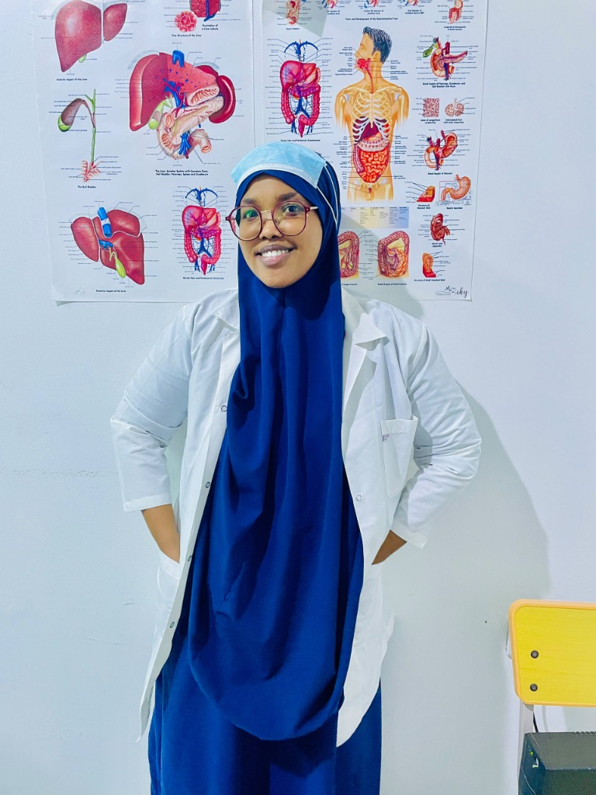

2026
The commencement of a lifetime oath, marking years of demanding clinical learning.
Today, we celebrate a distinguished, compassionate physician—her persistence, knowledge, and care now opening the door to a new chapter of service.

The commencement of a lifetime oath, marking years of demanding clinical learning.
Where medical excellence met a commitment to serve, heal, and lead with compassion.
A calling built on knowledge, responsibility, and the noble Hippocratic tradition.
“Maanta uma dabbaaldegayno kaliya maalin qalin-jabin ah; waxaan u dabbaaldegaynaa dhabar-adayggii, samirkii, iyo dadaalkii hagar-la’aanta ahaa ee Drs. Zamzam ku soo gaartay xilligan farxadda iyo guusha taariikhiga ah.”Daawo Socdaalkeeda Guusha →